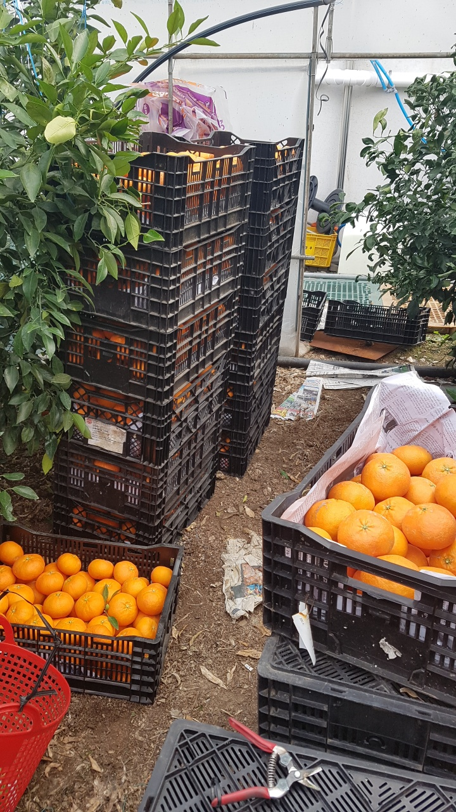
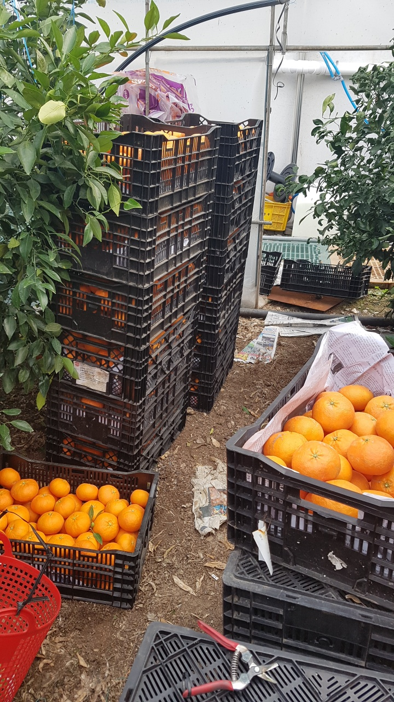

1) 연혁
대성농장은 90~00년대부터 제주도만의 아름다운 볼거리, 맛있는 먹거리를
많은 관광객들께 값싼 가격에 제공해오던 좋은 제주농장입니다

2) 판매 작물
대성농장은 귤, 한라봉, 천혜향, 레드향 등 다양한 제주도산 농작물을
값싼 가격에 판매하고 있습니다.

3) 위치
대성농장은
제주특별자치도 '서귀포시 법환동'
에 위치하고 있습니다.4) 연락처
농장주: 이문익
연락처: 010-3693-1596
대성농장은 90~00년대부터 제주도만의 아름다운 볼거리, 맛있는 먹거리를
많은 관광객들께 값싼 가격에 제공해오던 좋은 제주농장입니다

대성농장은 귤, 한라봉, 천혜향, 레드향 등 다양한 제주도산 농작물을
값싼 가격에 판매하고 있습니다.
대성농장은
농장주: 이문익
연락처: 010-3693-1596